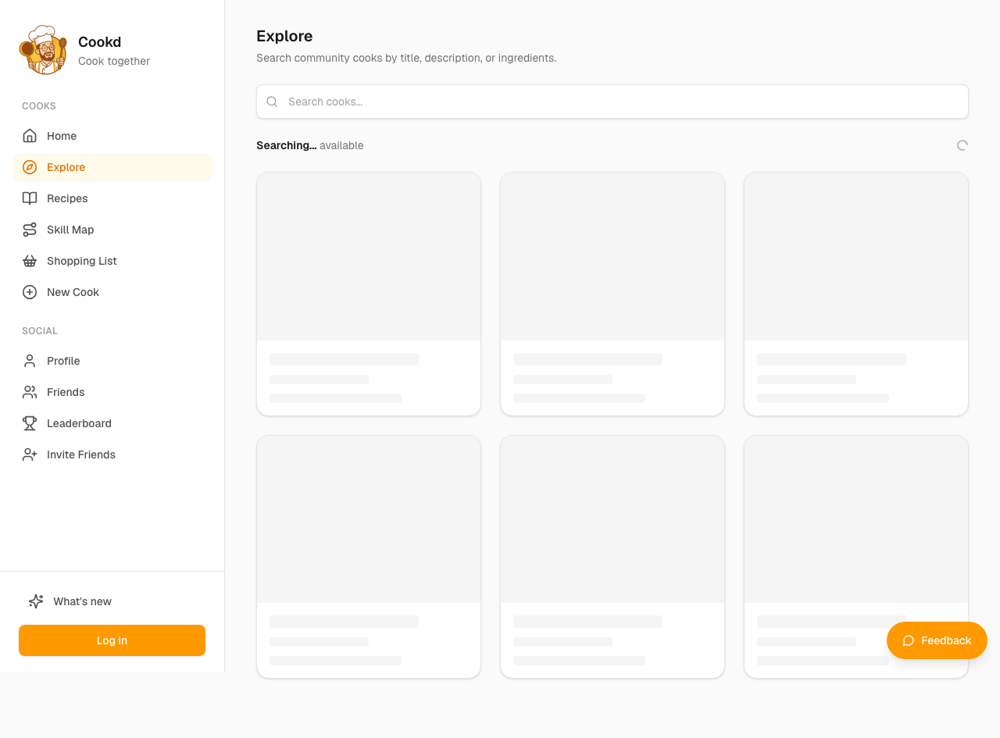
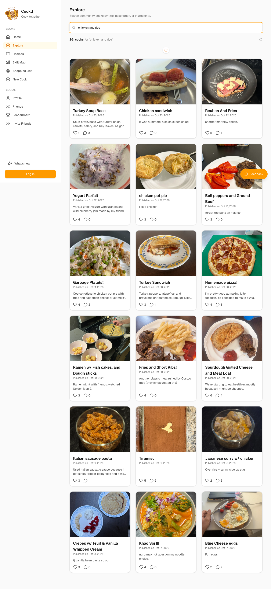
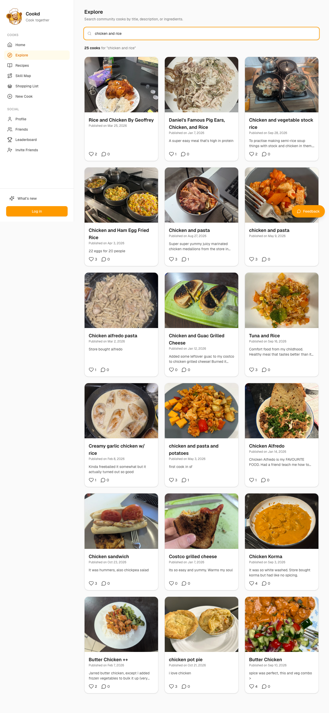
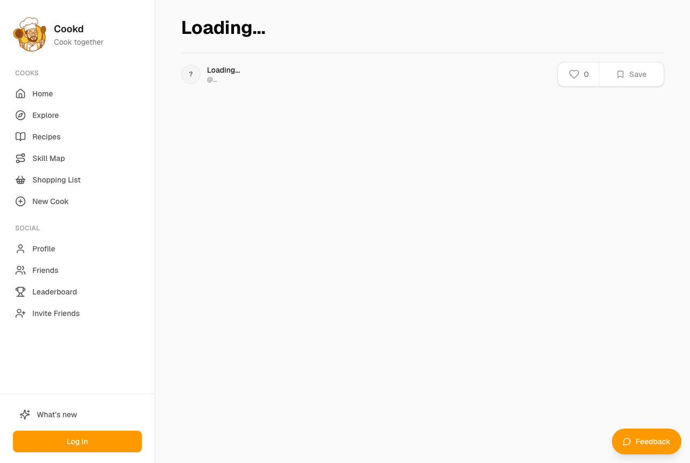
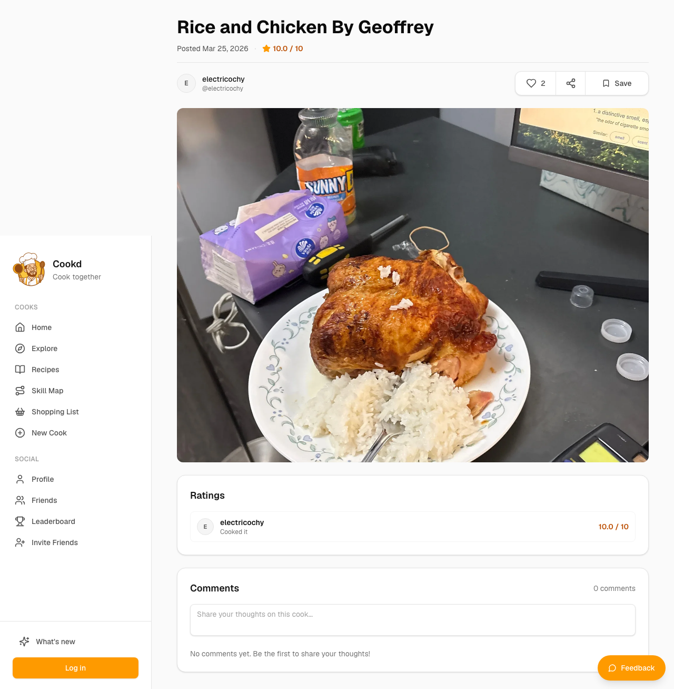
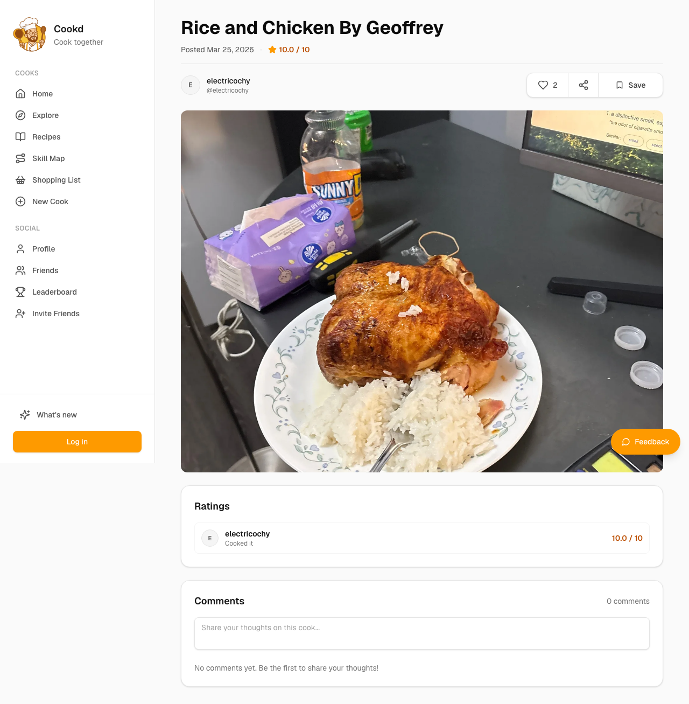
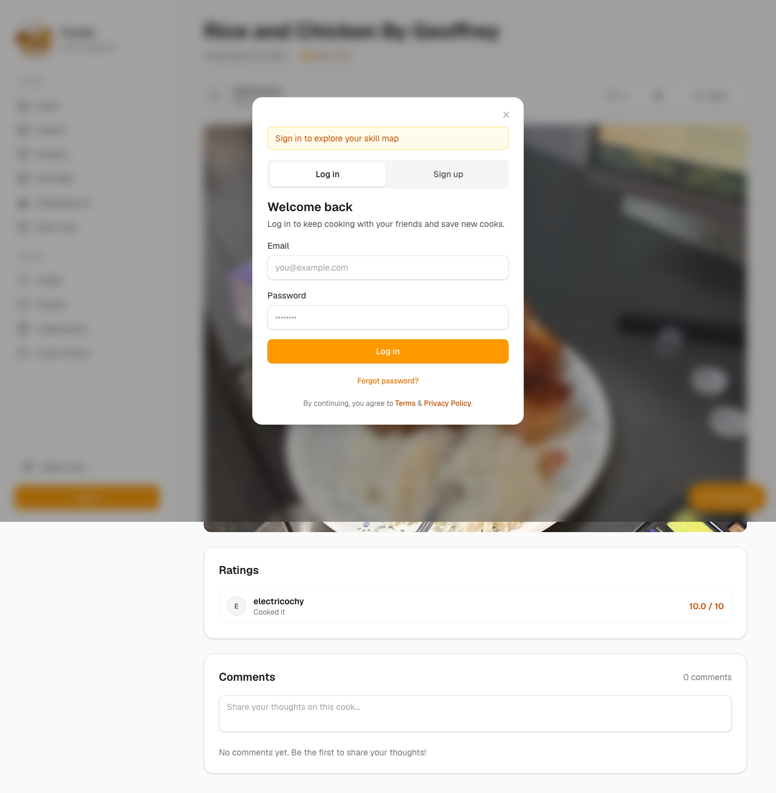
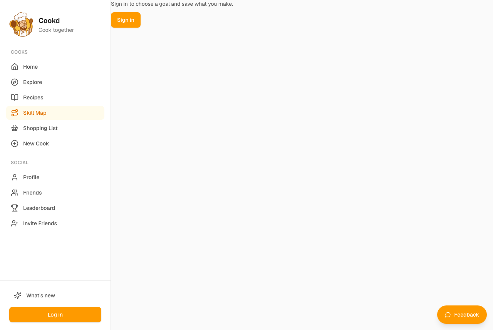
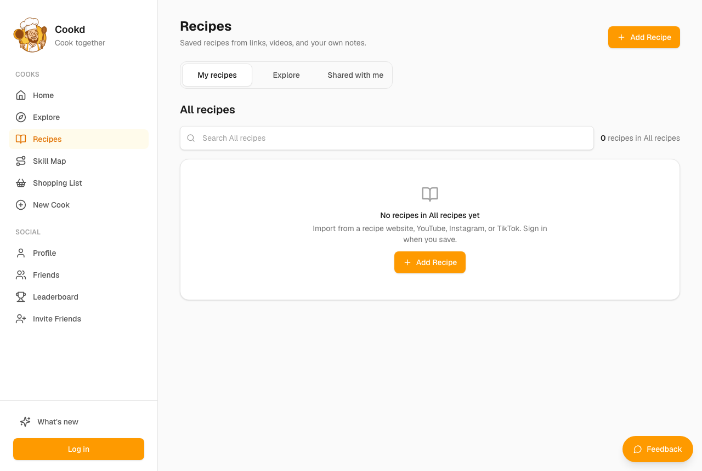

Dev — Student just learning to cook, looking for easy meal ideas
You moved into a student flat and mostly eat pasta and takeaway; you want cheap, easy dinners and some motivation to cook more. You're curious and will poke around the whole site.
abandonedcareful patience 4/513 steps
Debrief
Would not keep using it · score 3/10 — None of my goals worked without an account, and the recipe I opened had no ingredients or steps. The Skill Map was hidden with no sign it was free, and the popup trapped me. I'd go back to YouTube or Google for dinner ideas. I might try again if the Skill Map were previewable and the recipes were complete.
| Goal | Outcome | Notes |
|---|---|---|
| Search for easy dinner ideas using chicken and rice or other cheap ingredients | failed | Explore search for 'chicken and rice' returned 261 results, but most were unrelated (tiramisu, yogurt parfait, crepes). The one 'Rice and Chicken' recipe I opened had a title and rating but no ingredients or method. I gave up after about five dead ends. |
| Find out what the 'Skill Map' is and whether it would help me get better at cooking | failed | The Skill Map link in the menu didn't work while the login popup was stuck on screen. When I went to /skill-map directly, the page only said 'Sign in to choose a goal and save what you make.' It showed no preview of a learning path and no mention of price, so I still don't know what it is. |
| Try to save a recipe or add ingredients to a shopping list, and see what happens when I'm not signed in | partial | Clicking Save opened a 'Log in or sign up to continue' box, so I did see the signed-out behaviour. The popup then wouldn't close and blocked navigation. I never found a shopping list. I didn't try signing up because I didn't trust the site enough. |
Frictions
- step 0: The Recipes page is empty for a new visitor and its search only covers my own saved recipes.
Expected: A recipe search or browse page with ideas I can look through straight away. · Happened: I got 'No recipes in All recipes yet' and a prompt to import a link or video. The search box says 'Search All recipes' and only looks through my own empty library. · Why it matters: I'm a beginner with no recipes saved and no links to import. The first menu item I clicked gave me nothing to do, so my first impression was a dead end.
- step 1: Explore opens with no recipes shown, only a search box.
Expected: Some featured or popular easy recipes on the page, so I can browse without knowing what to type. · Happened: A blank page with a search field and a 'Searching... available' line. I couldn't tell whether it was loading or waiting for me. · Why it matters: I don't yet know what I want to cook, so I need suggestions. A blank page makes the site look broken or empty.
- step 2: Search results for 'chicken and rice' were mostly irrelevant.
Expected: Recipes containing chicken and rice, or at least chicken or rice. · Happened: 261 'cooks' came back, including Tiramisu, Yogurt Parfait and Crepes. Only a couple of results (chicken pot pie, Japanese curry with chicken) were close. · Why it matters: Searching by what's in my fridge is the main reason I'd use this. If the results are random, I can't trust the search and I'll go back to Google or TikTok.
- step 3: Result cards show only a title, a short description and a like count.
Expected: Ingredients, time or an easy/cheap indicator on each card. · Happened: I had to open each recipe to find out anything useful. My click on #71 also failed because that element wasn't on the page. · Why it matters: On a tight budget I want to scan ingredients quickly. Opening every card to check costs me time and patience.
- step 4: The recipe page stayed on 'Loading...' with the buttons disabled.
Expected: The recipe to open quickly with its title, ingredients and steps. · Happened: Everything showed 'Loading...' and the Save button was greyed out. · Why it matters: Slow or stuck pages make me think the site is broken, and I'd normally leave at that point.
- step 5: The recipe page had no ingredient list and no method.
Expected: A full recipe I could cook from. · Happened: Only the title 'Rice and Chicken By Geoffrey', a 10/10 rating, a comment box, a Save button and a 'Cooked it' note with 2 likes. · Why it matters: A recipe with nothing to cook from defeats the whole site. A 10/10 rating from two likes tells me nothing.
- step 6: Save went straight to a login wall, and I still couldn't see the recipe's contents.
Expected: To see the full recipe first, then be asked to sign in to save it. · Happened: A 'Log in or sign up to continue' popup appeared over an empty recipe. · Why it matters: Asking me to make an account before I've seen anything worth saving feels pushy. I'm already wary of subscriptions, and this adds to it.
- step 9: The login popup wouldn't close, and the Skill Map link did nothing while it was open.
Expected: The Close button to dismiss the popup, and the menu link to open the Skill Map. · Happened: The popup stayed on top and blocked navigation. I had to type /skill-map into the address bar to get anywhere. · Why it matters: A modal I can't dismiss traps me on the page. Most people wouldn't know to type a URL and would just leave.
- step 10: The Skill Map page is entirely behind sign-in, with no preview and no pricing information.
Expected: A visible 'learn the basics' path or sample levels, plus a clear note that it's free. · Happened: Only the text 'Sign in to choose a goal and save what you make.' · Why it matters: The Skill Map is the feature that would make me cook more, and I couldn't tell what it is. Hiding it behind a login with no price info looks like a paywall to someone wary of subscriptions.
- step 11: The Recipes page shows '0 recipes' for signed-out users, with no pointer to Explore.
Expected: A signed-out page that sends me to community recipes or example content. · Happened: 'No recipes in All recipes yet' and a prompt to import my own recipe or sign in. · Why it matters: I ended up where I started and the site gave me no reason to stay or sign up.
Missing features
- Browsable beginner recipes on Explore, such as 'easy', 'cheap' and 'under 5 ingredients' collections shown without searching — Students don't know what to search for. Curated starting points would give them something to cook that night.
- Ingredient-based search that matches ingredients properly, with ingredients shown on result cards — I want to cook with what I already have and avoid buying extras, so results must match my ingredients and show them.
- Filters for budget, time, and equipment (one pot, no oven) — I have limited equipment, a tight budget and only evenings to cook.
- Full recipes with ingredients and steps, or a clear warning when a recipe is incomplete — Without them there's nothing to cook from.
- A signed-out preview of the Skill Map showing the levels and a 'free' label — I need to see the learning path and know the cost before I'll make an account.
- A shopping list feature that is visible and easy to find — I wanted to add ingredients to a list but never found one.
Liked
- Explore shows real home cooks' recipes with likes, ratings and 'Cooked it' notes, which feels more honest than chef content.
- Search worked for the Japanese curry with chicken and the chicken pot pie, so a better match could be there.
- The 'Cooked it' idea and the Skill Map name suggest some progress tracking, which appeals to me because I like streaks.
- The login popup clearly said what signing in was for ('Sign in to save cooks').
Replay — Goal → Action → Expectation → Result → Friction
Step 0 · https://cookd.ca/
Goal: Search for easy dinner ideas using chicken and rice or other cheap ingredients
Thought: Okay, I'm on the feed. Lots of posts about tiramisu and passionfruit curd, which is not really my budget. Everything's labelled 'Cooked' with streaks, so it feels a bit like a social feed. I need something cheap, so I'll look for a recipes section where I can search by ingredient. Trying Recipes first.
Action:
click #3Expectation: A recipes page with a search bar or filters, ideally where I can type in ingredients like chicken and rice.
Result: Landed on the Recipes page. It says 'Saved recipes from links, videos, and your own notes' and 'No recipes in All recipes yet'. There's a search box, but it says 'Search All recipes', which looks like it only searches recipes I've already saved.
Friction (3/5): I expected a way to search recipes by ingredient across the site, not an empty list. The only search box seems to be for my own saved stuff, and the page wants me to import a link from a website or video first. As a student with no saved recipes, that's a dead end for finding dinner ideas.
Step 1 · https://cookd.ca/recipes
Goal: Search for easy dinner ideas using chicken and rice or other cheap ingredients
Thought: Hmm, so this is more like a personal recipe box where I paste links. I don't want to hunt down random YouTube videos. Let me try the Explore tab, it probably has the real recipes.
Action:
click #2Expectation: Explore shows public recipes from home cooks that I can search by ingredient, like chicken or rice.
Result: Explore page loaded with a search box that says 'Search community cooks by title, description, or ingredients.' The page itself shows no recipe cards yet, just the search field and a 'Searching... available' line.
Friction (2/5): I expected to see some featured or cheap dinner recipes right away, or at least a list. Instead there's only an empty search box, and I'm not sure if it's loading or waiting for me to type. Seems like I have to type something to see anything.

Step 2 · https://cookd.ca/explore
Goal: Search for easy dinner ideas using chicken and rice or other cheap ingredients
Thought: Right, the box says ingredients, so I'll type chicken and rice and see what the community has.
Action:
type #13 “chicken and rice”Expectation: A list of home-cook recipes that mention chicken and rice, ideally with visible ingredient lists and cheap-looking dinners.
Result: The search says '261 cooks for "chicken and rice"', but the results are mostly unrelated: Turkey Soup Base, Yogurt Parfait, Tiramisu, Crepes, Khao Soi. Only a couple, like 'chicken pot pie' and 'Japanese curry w/ chicken', seem even close.
Friction (4/5): I expected results that actually match chicken and rice. Instead the list looks random, with a yogurt parfait and tiramisu showing up for a chicken-and-rice search. I can't tell if the search is matching the ingredients or just ignoring my words. It also doesn't show prices or how cheap anything is, which is what I care about.

Step 3 · https://cookd.ca/explore?query=chicken+and+rice
Goal: Search for easy dinner ideas using chicken and rice or other cheap ingredients
Thought: This is annoying. 261 results and most of them have nothing to do with chicken or rice. The Japanese curry one says 'over rice' and has chicken, so I'll open that and see if the ingredient list is actually there and if it's cheap.
Action:
click #71Expectation: A recipe page for Japanese curry with chicken, showing a visible ingredient list and simple steps.
Result: there is no element [71] on this page
Friction (2/5): The cards only show a title, a short description and a like count. I can't see the ingredients or the cost from the list, so I have to open each recipe to find out if it's cheap. Also, several results are pasta or grilled cheese, not rice. I'll open the top 'Rice and Chicken' one to see whether the ingredients are listed.

Step 4 · https://cookd.ca/explore?query=chicken+and+rice
Goal: Search for easy dinner ideas using chicken and rice or other cheap ingredients
Thought: Okay, the list is more sensible now. 'Rice and Chicken' is the most obvious match for what I want, so I'll check it out. If the ingredients aren't visible and the price isn't obvious, I'm going to be annoyed.
Action:
click #15Expectation: A recipe page with a visible ingredient list, simple steps, and a rough sense of how cheap it is.
Result: The recipe page is still loading. It just shows 'Loading...' everywhere, with the like, save and comment buttons greyed out. No title, no ingredients, nothing I can read yet.
Friction (3/5): I expected the recipe to open with its title, ingredient list and steps. Instead it's stuck on 'Loading...', and the Save button is disabled, so I can't even save it. I need to see the ingredients before I know if it's cheap, so this is blocking me.

Step 5 · https://cookd.ca/recipe/4fdc841c-81b6-4786-8bcb-cd347f7fed03
Goal: Search for easy dinner ideas using chicken and rice or other cheap ingredients
Thought: Come on, it's just loading. I'll give it a moment, and if it still says loading I'll try going back to the results.
Action:
scrollExpectation: The page finishes loading and shows the recipe title, ingredients and method.
Result: The recipe finished loading, but the page is just the title 'Rice and Chicken By Geoffrey' with a 10.0/10 rating, a comment box and a Save button. There's no ingredient list and no method anywhere on the page. Only a 'Cooked it' note from electricochy with 2 likes.
Friction (4/5): I expected the ingredients and steps to be on the recipe page, that's the whole reason I opened it. Instead there's nothing to cook from. I can't tell what's in it or whether it costs anything, and the 10/10 with two likes doesn't tell me much. This is the third time I've hit a dead end in ten minutes, and I'm not convinced this site has what I need.

Step 6 · https://cookd.ca/recipe/4fdc841c-81b6-4786-8bcb-cd347f7fed03
Goal: Search for easy dinner ideas using chicken and rice or other cheap ingredients
Thought: No ingredients, no steps, just a rating and a comment box. Maybe Save works without logging in? I'll try it, but if this is all there is I'm going back to just Googling.
Action:
click #17Expectation: The recipe gets saved to my list, or it asks me to log in so I can save it.
Result: Clicking Save didn't save anything. It opened a 'Log in or sign up to continue' box with 'Sign in to save cooks'. The recipe still has no ingredient list or method, just a title, a 10/10 rating and 2 likes.
Friction (4/5): I expected Save to work or at least show me the ingredients. Instead I got a login wall, and the recipe itself is still empty. That's my fifth failed attempt at this, and I can't tell whether it's the site or the recipe that's broken. I still don't know what's in it or what it costs.

Step 7 · https://cookd.ca/recipe/4fdc841c-81b6-4786-8bcb-cd347f7fed03
Goal: Search for easy dinner ideas using chicken and rice or other cheap ingredients
Thought: Right, that's enough. Five tries and I still can't see a single ingredient. I'm not making an account just to get a recipe that might be blank. Giving up on this and checking the Skill Map.
Action:
give_up_goalExpectation: I move on to the Skill Map or another goal, and I don't get anything useful from this search.
Result: I gave up on the chicken and rice search. The page is still showing the 'Log in or sign up to continue' box over the recipe, which is still just a title, a rating and two likes with no ingredients.
Friction (2/5): I expected the login box to go away once I'd given up on saving. It's still blocking the page, so I can't even read what's behind it. It's a minor annoyance, but it's one more thing standing between me and the actual site.

Step 8 · https://cookd.ca/recipe/4fdc841c-81b6-4786-8bcb-cd347f7fed03
Goal: Find out what the Skill Map is and whether it would help me get better at cooking
Thought: Fine, I'll close this popup and go look at the Skill Map. If it's just more empty pages, I'm done with this site.
Action:
click #29Expectation: The login box closes and I can see the recipe page again, so I can navigate to the Skill Map from the top menu.
Result: The login box has closed. The recipe page is still just the title, a 10.0/10 rating, two likes and a comment box, with no ingredients or method. The top menu now shows a Skill Map link.
Friction (2/5): I expected the recipe to finally show its ingredients now the popup is gone, but it doesn't. I can see Skill Map in the menu, though, which is what I wanted to check. Nothing is broken there, just the recipe is still empty.
Step 9 · https://cookd.ca/recipe/4fdc841c-81b6-4786-8bcb-cd347f7fed03
Goal: Find out what the Skill Map is and whether it would help me get better at cooking
Thought: Right, Skill Map. If the recipe is empty, maybe this is where the actual learning stuff is. Going there now.
Action:
click #4Expectation: A page explaining the Skill Map, ideally a path like 'learn the basics' that's free to use without a subscription.
Result: Clicking Skill Map didn't take me anywhere. The 'Log in or sign up to continue' box is still on top, and the page is still the empty recipe with no ingredients or method. Closing the box didn't work either, so I'm stuck behind it.
Friction (3/5): I expected the Skill Map link in the menu to open the Skill Map. Instead the login popup is still there and blocks everything behind it. The Close button didn't clear it, so I can't get anywhere on the site. That's the second time something on this site has failed to do what it says, and I'm close to done.

Step 10 · https://cookd.ca/recipe/4fdc841c-81b6-4786-8bcb-cd347f7fed03
Goal: Find out what the Skill Map is and whether it would help me get better at cooking
Thought: The menu link says Skill Map but the popup is in the way. I'll try going straight to the Skill Map address from the menu link, since the popup seems to be stuck on screen.
Action:
navigate /skill-mapExpectation: The Skill Map page loads with a learning path I can read without logging in.
Result: The navigate worked and I landed on the Skill Map page, but it just says 'Sign in to choose a goal and save what you make.' There's no learning path or goal list visible without signing in.
Friction (3/5): I expected to see the learning path, like 'learn the basics', before being asked to sign in. Instead the whole page is locked behind a sign-in prompt, so I still can't tell what the Skill Map actually offers or whether it's free. I'm wary of anything that feels like a paid subscription, and a sign-in wall with no preview makes me suspicious.

Step 11 · https://cookd.ca/skill-map
Goal: Find out what the Skill Map is and whether it would help me get better at cooking
Thought: Right, so it's a sign-in gate again. I've now failed on the recipe, the save button, the popup and the menu. I'll give the Skill Map one more look at the Recipes and Explore pages, but if nothing shows without an account I'm leaving.
Action:
click #3Expectation: The Recipes page shows a list of real home-cooked dinners with ingredients I can see without logging in.
Result: The Recipes page loaded, but it's empty: '0 recipes in All recipes' and 'No recipes in All recipes yet'. It says recipes come from links, videos or my own notes, and that I need to sign in to save. There's a search box, but nothing to search through.
Friction (4/5): I expected a list of real home-cooked dinners I could browse without logging in, like I'd see on Explore. Instead the library is empty and the only option is to import my own recipe or sign in. I also still can't see what the Skill Map offers, so the site has given me nothing I can actually use yet.

Step 12 · https://cookd.ca/recipes
Goal: Find out what the Skill Map is and whether it would help me get better at cooking
Thought: Empty recipes, empty Skill Map behind a login, and a recipe page with no ingredients. That's five or more failed attempts now. I'm done with this site for tonight.
Action:
finishExpectation: I stop using the product, since none of my goals can be met without making an account and I don't trust what's here yet.
Result:
